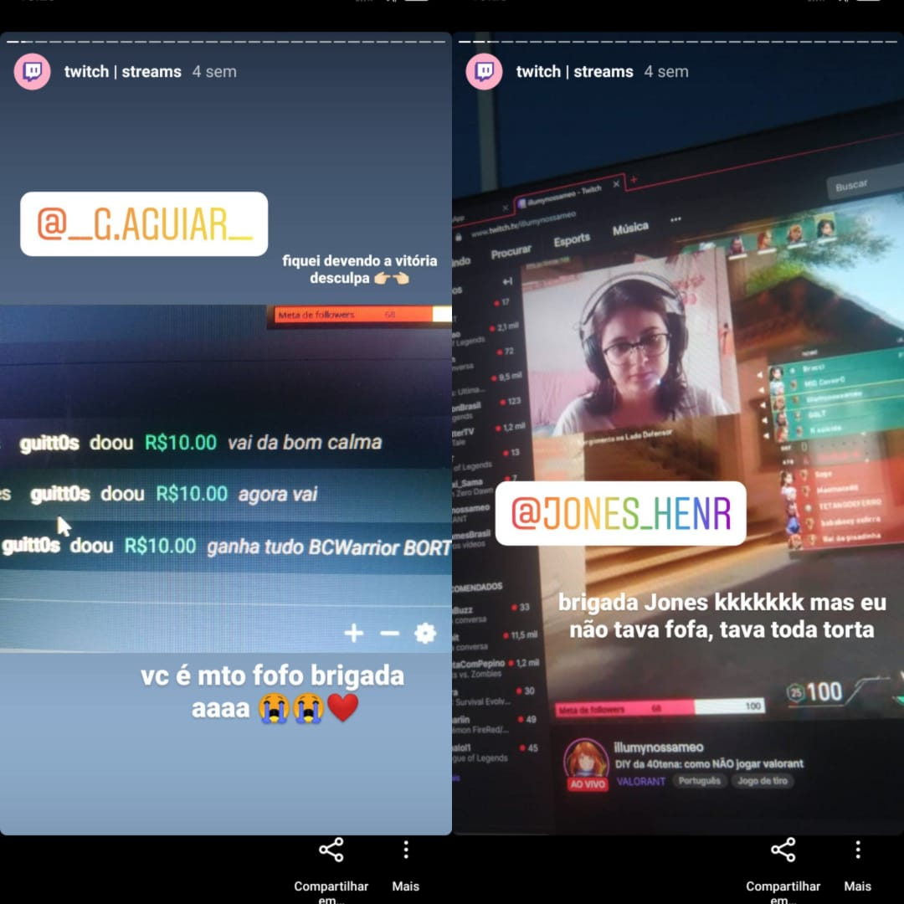
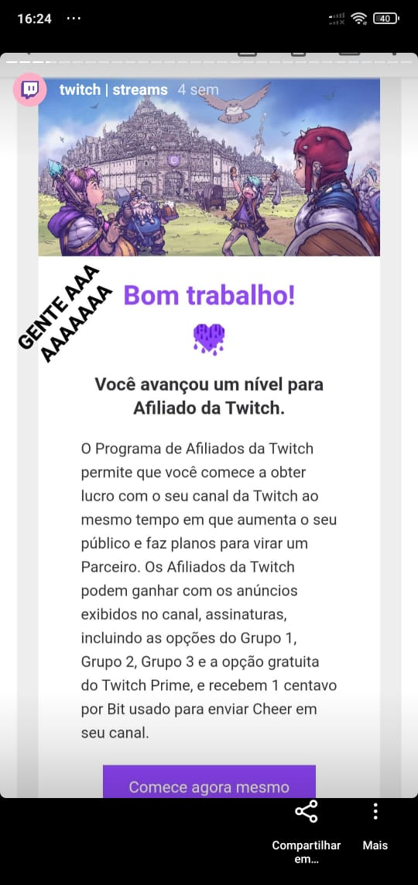
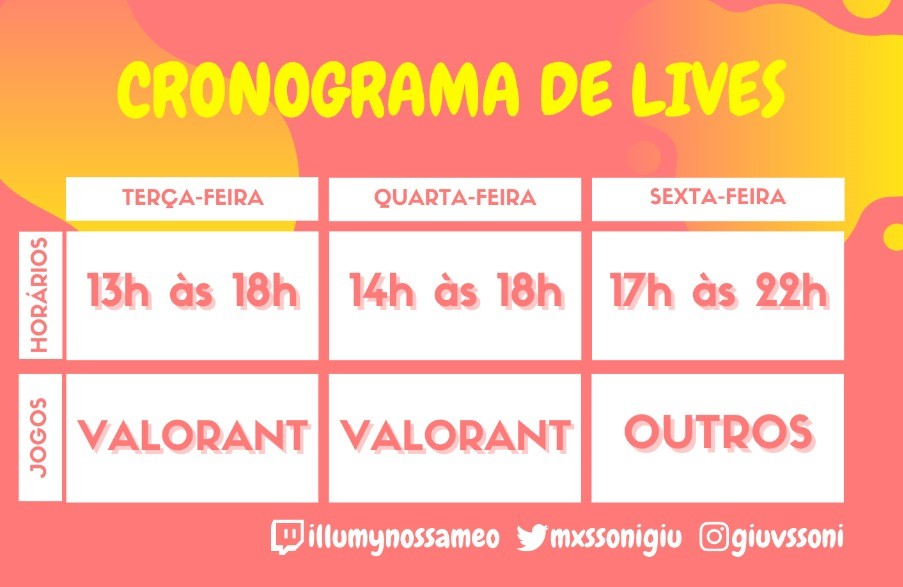

Minhas lives na Twitch TV
Essa é uma página mais descontraída!
Em 2020 comecei a TENTAR fazer lives na Twitch, mas não dava muito certo, minha internet não era boa o suficiente e eu não fazia ideia de como configurar as coisas. Ao longo dos meses fui tentando entender como funcionavam as configurações do programa que eu uso, vendo alguns vídeos, perguntando para algumas pessoas...Até que consegui uma internet melhor e então corri atrás de deixar tudo certinho para conseguir streamar. Aos poucos, até mesmo com ajuda dos meus followers, fui configurando até que ficasse tudo perfeito como está agora!!
Mesmo quando a live estava mal configurada, com lag e perca de quadros, as pessoas estavam me acompanhando, a maioria amigos, que acabavam chamando amigos deles para ver, pessoas que eu não conhecia, pessoas que vinham através da divulgação dos meus amigos e etc. Isso estava me deixando muito feliz e empolgada para continuar.
Dois amigos meus haviam me dado donates com mensagenzinhas me incentivando a continuar, e apesar de achar que ia demorar muuuuuito para o canal crescer, começou a acontecer coisas mais rápido do que eu esperava.
No mesmo dia em que eu falei em live "ainda vai demorar bastante pra eu alcançar os requisitos de afiliada da Twicth", três horas depois chegou um email dizendo que eu havia conseguido!!!
Logo em seguida comecei a me informar sobre tudo que envolve ser afiliada da Twitch, corri atrás de informações sobre monetização, sobre gerar conteúdo e várias coisas. Eu não tenho Photoshop e de qualquer forma não sei usar, mas comecei a me virar para aprender a fazer emotes, figurinhas, layout para minha stream, banners, capa e tudo o que pudesse deixar meu canal mais bonito e completo nessa nova etapa que comecei a levar as lives mais a sério. Aprendi a fazer as coisinhas e sempre que descubro algo novo, busco colocar em prática para melhorar ainda mais meu conteúdo.
Fiz um cronograma de lives e me responsabilizei a não jogar offstream, assim eu iria controlar bem meu tempo jogando e jogar com muito mais vontade, pois estaria ao vivo. Nem sempre consigo cumprir o cronograma exatamente assim, pois meus estudos e vida profissional ainda são minha prioridade, mas faço o que posso para encaixar as lives na minha rotina.
Agora, vou deixar aqui alguns clipes que meus followers e eu fazemos durante as lives, de jogadas bem feitas ou apenas cenas engraçadas onde estou passando vergonha e me divertindo! 😸